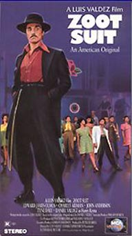
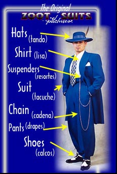

El pachuco y su zoot suit
| Portada de "Zoot Suit" (1981), película del dramaturgo Luis Valdez sobre los "Zoot-Suit riots" de los años 40 en Los Ángeles, en que los pachucos fueron atacados por la población anglo-americana. |  Descripción de la vestimenta del pachuco en la página Web de la actual tienda "El Pachuco." |